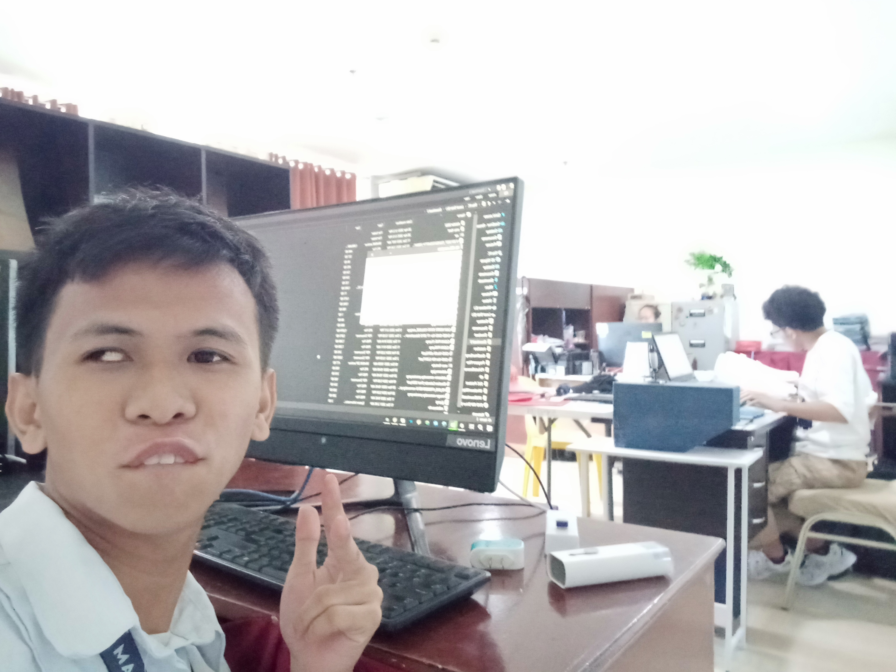
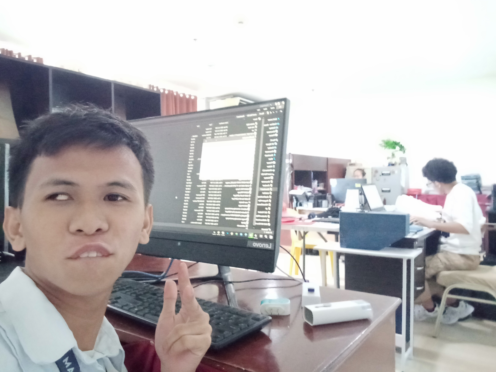

Week 1
This week, Superduper was our team's focus in reviewing student proposals for off-campus and on-campus events. We started by reviewing stacks of proposal papers carefully, ensuring each contained the basics clear goals, complete plans, and the right approvals. A couple of proposals were submitted lacking important details we sent it back to the students, but we collaborated with the students to have all sorted by the end of the week. With the proposals done and signed off, we went on to entering the details into our system, capturing the spirit if where is the document going with accuracy and no mistakes, thanks to our diligent double-checks. The last step was the delivery: some forms were shipped out to VPAA and off-campus VPAA. The only snag was those very first incomplete submissions, which is leading us to wonder about whether a student-oriented checklist would make it even simpler.
 
